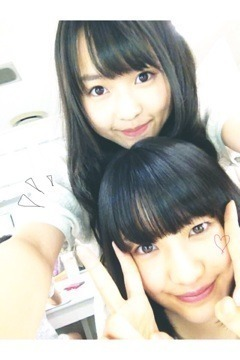
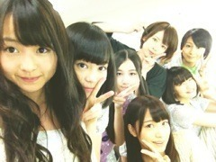

| 2012/08 07 Tue | 198回目*marika |
いつも読んでくださってる方、
初めて読んでくださった方、
コメントしてくださった方、
ありがとうございます♪

*****HaPPy BirThDAy*****
かな♡2012.8.6
いつも冷静で優しいの、
そんでダンスうまいし...
踊ってる姿がキラキラしてる！
そういや、はなまるうどん一緒に
行くとかいいながら行ってないね

絶対行こうー！
まりちゃって呼んでいいのは
かなだけだよ

 きゃ
きゃ
きゃ
あ、かなの髪触るのすき笑
おめでとうっだいすきかーなりん

**********
 もし万理華単独でCMでることに
もし万理華単独でCMでることに
なったとしたらどんなCMに出たい？
 なんでも嬉しい！！
なんでも嬉しい！！
もう、なんでもいい！
おいで牧場!?
楽しそうでしたね！
そのあとフードかぶってたけど、
何してたの？
さゆりんとゆったんのパジャマは
フードが付いてたんやけど、
私付いてなくて...
だから無理やり被ってまねしたの。
そしたらそこ使われてた笑
最近まりかちゃんの事が
好きすぎで...まりかちゃんの握手とか
今度のシングルの時握手会
沢山行ってもいいかな？
やーーーー嬉しすぎるよーーー
握手会きてよー！
そんで沢山おしゃべりして
もっと好きにしてやるっっ
 ←
←
←
徳島の名物を何か
食べたり見たりした？
すだちの飴ちゃん、
すだちのゼリー
すだちうどん......
すだち、最高だわね！ふぅ！
絶対に万理華ちゃんて
悪ふざけ好きでしょ？（笑）
え

そんなことないよ
１人で肝試しに行く。
１人でバンジージャンプをする。 マリカは、どちらを選びますか？
肝試しなんてもう絶対
やりたくないね！！！
でもバンジージャンプ...きょわい
 ‼
‼
‼
USJの中で好きな
キャラクターはなーに？(*^^*)
ベティーちゃん
まりか子供好きそうやな！
あ！でもまりかも子供やし
そうでもないか？？
んま、失礼しちゃう！
こどもだいすきよー><
中学のときに幼稚園行って遊んだけどかわいすぎますね

３３人個人ＰＶって
まりっかはタイプ何に
収録されてるの？
今回のぶらり旅はTypeCです♪
**********
乃木どこキャンプロケ第3弾！
感想ありがとうございました。
本っっっ当に怖かった
でもね！CDは私が見つけたの！←
さゆりん頼もしかった><
ゆったん置いてっちゃってごめん

もう怖すぎてテンパってしまった...
あ、牧場アイドル「おいで牧場」
応援よろしくお願いします
 笑
笑
笑
＊＊＊
実は...
私の父が8月4日誕生日だったです！
でもその日は父が仕事で
お祝いできなかったのですが、
今日帰ってきたから手紙渡しました！
パパ、お誕生日おめでとう♪
＊＊＊

MJの収録と撮影があったよ^^
楽しかったー！
では明日も頑張りまりかっっ

まりか
コメント(122)
2012/08/07 00:36